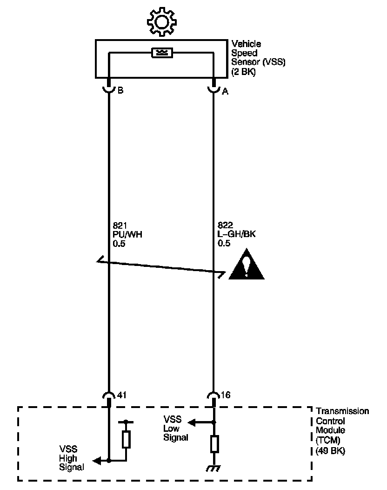

4L80-E / 4L85-E Automatic Transmission
DTC P0722

Circuit Description
The vehicle speed sensor (VSS), also called the output shaft speed sensor (OSS), provides vehicle speed information to the transmission control module (TCM). The VSS is a permanent magnet generator. The sensor is mounted in the transmission case facing the rear internal gear which is splined to the output shaft assembly. As the output shaft and internal gear rotate, the toothed rotor of the internal gear produces AC voltage as the rotor teeth pass through the magnetic field of the sensor. The AC voltage level and the number of pulses increase as the speed of the vehicle increases. The TCM converts the voltage to vehicle speed. The TCM uses the output shaft speed signal to determine shift timing and torque converter clutch (TCC) scheduling.
If the TCM detects no vehicle speed when there is engine speed in a drive gear range, then DTC P0722 sets. DTC P0722 is a type B DTC.
DTC Descriptor
This diagnostic procedure supports the following DTC:
DTC P0722 Output Speed Sensor Circuit Low Voltage
Conditions for Running the DTC
^ No transmission ISS DTCs P0716, P0717.
^ No transmission OSS DTC P0722 or P0723.
^ No TFP DTCs P1810, P1815, P1816, P1818.
^ Ignition voltage is between 8-18 volts.
^ The TCC slip speed is -20 RPM or greater.
^ The engine is running for greater than 5 seconds.
^ Transmission is not in PARK or NEUTRAL.
^ TFT is between -40° C to 150° C (-40° F to 302° F).
^ The calc. throttle position is 10 percent or greater.
^ The engine torque is greater than 50 N.m (37 lb ft).
^ The input speed is between 1,500 RPM and 6,500 RPM.
Conditions for Setting the DTC
The transmission output shaft speed is 200 RPM or less for 4.5 seconds or greater.
Action Taken When the DTC Sets
^ The TCM requests the engine control module (ECM) to illuminate the malfunction indicator lamp (MIL) during the second consecutive trip in which the Conditions for Setting the DTC are met.
^ The TCM commands maximum line pressure.
^ The TCM freezes transmission adaptive functions.
^ The TCM calculates output speed from the input speed sensor and commanded gear.
^ The ECM records the operating conditions when the Conditions for Setting the DTC are met. The ECM stores this information as Freeze Frame and Failure Records.
^ The TCM records the operating conditions when the Conditions for Setting the DTC are met. The TCM stores this information as Failure Records.
^ The TCM stores DTC P0722 in TCM history during the second consecutive trip in which the Conditions for Setting the DTC are met.
Conditions for Clearing the MIL/DTC
^ The ECM turns OFF the MIL after the third consecutive drive trip in which the TCM does not send a MIL illumination request.
^ A scan tool can clear the MIL/DTC.
^ The TCM clears the DTC from TCM history if the vehicle completes 40 warm-up cycles without an emission related diagnostic fault occurring.
^ The TCM cancels the default actions when the ignition is OFF long enough in order to power down the TCM.
Diagnostic Aids
^ Inspect the rear internal gear teeth for damage.
^ Visually inspect the VSS for cracks or damage.
^ Ensure the VSS is properly torqued to the transmission housing.
Test Description
The numbers below refer to the step numbers on the diagnostic table.
2. Disable the traction control system when performing this step. When the ignition key is cycled to the OFF position and then cycled back ON, the traction control system defaults to ON.
3. This step tests the VSS.
5. This step tests the integrity of the VSS.